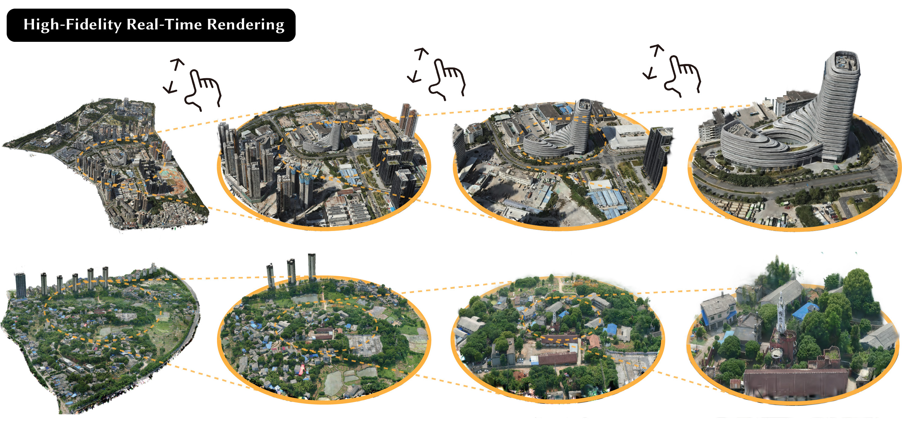
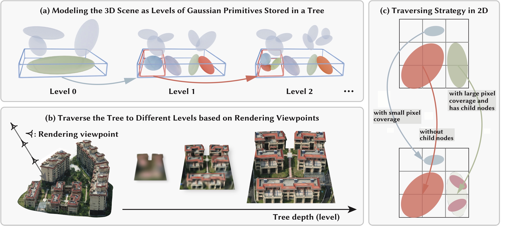

Real-time rendering demo.
Abstract

This paper tackles the challenge of high-quality, real-time rendering of large-scale scenes with millions of square meters. The recently proposed 3DGS has demonstrated exceptional rendering quality and speed, but it typically requires a large amount of Gaussian primitives to model complex 3D scenes in high fidelity. When users need to holistically view such scenes, the 3DGS model falls short in rendering excessive Gaussians in real time. To solve this issue, we propose a novel representation named Level of Gaussians (LoG) for efficiently rendering 3D scenes, inspired by the classical idea of levels of detail (LOD) in rendering: fine details are essential for close views but become redundant for distant views. We implement LoG as a tree structure storing Gaussians and devise a progressive training strategy to reconstruct it from images in an end-to-end manner, which also provides effective regularization and helps overcome the local minima. In the rendering phase, the optimal level of Gaussians is adaptively selected based on the viewer's distance and angle. Experiments show that our approach enables real-time and high-quality rendering of areas spanning millions of square meters, representing a significant advancement in rendering large-scale scenes.
Method

(a) Our method models a 3D scene with levels of Gaussian primitives and stores them in a tree structure. For instance, the large green primitive within the blue frame at Level 0 is further represented by four smaller primitives within the blue frame at Level 1. (b) Each node in this tree can be represented in greater detail by its several child nodes, thereby offering varying degrees of detail in representing the scene. (c) During rendering, we traverse this tree to select the appropriate primitives that precisely represent the scene under the viewpoint. Specifically, we expand the tree until either the nodes have no child nodes or the diameter of each node is less than 1 pixel in image space. This strategy avoids the need to use thousands of primitives to render a distant building, which typically occupies only a few pixels in an image, thereby significantly accelerating the rendering process.
Citation
@inproceedings{LoG,
title={Real-Time View Synthesis for Large Scenes with Millions of Square Meters},
author={Shuai, Qing and Guo, Haoyu and Xu, Zhen and Lin, Haotong and Peng, Sida and Bao, Hujun and Zhou, Xiaowei},
year={2024}
}